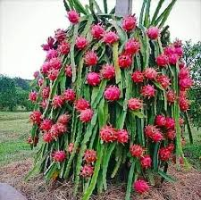

Agriculture and Food Systems
Foods and Sales Department

Paddy refers to the rice plant that is cultivated in flooded fields, often called rice paddies. It’s the stage of rice before it is harvested and processed into edible rice. The plant thrives in warm and wet conditions, making rice paddies the ideal environment for growth. These fields are typically flooded with water to support the rice, which helps control weeds and provides nutrients. Once harvested, the rice grains are separated from the stalks and processed. Paddy cultivation is crucial in many countries, especially in Asia, where rice is a staple food. Successful paddy farming requires careful water management and appropriate soil conditions.

The dragon fruit plant is a fascinating climbing cactus belonging to the genus Hylocereus, native to Central and South America but now cultivated worldwide in tropical regions. With its triangular green stems and aerial roots, it can grow up to 20 feet tall when properly supported. The plant produces spectacular large white flowers that bloom only for a single night, earning them the nickname "Queen of the Night." After flowering, it develops its namesake fruit - an oval-shaped berry with bright pink or red leathery skin covered in green scales that resembles a mythical dragon. Inside, you'll find either white or red flesh dotted with tiny black seeds, offering a mild sweet flavor often compared to a blend of kiwi and pear. Dragon fruit plants thrive in warm climates with well-draining soil and full sun exposure, making them popular in home gardens across Southeast Asia, Mexico, and parts of the United States like Florida and California. They're relatively easy to grow from cuttings and can begin producing fruit within just 1-2 years of planting.

Small, level, flooded field used to cultivate rice in southern and eastern Asia. Wet-rice cultivation is the
most prevalent method of farming in the Far East, where it utilizes a small fraction of the total land yet
feeds the majority of the rural population. Rice was domesticated as early as 3500 bc, and by about 2,000
years ago it was grown in almost all of the present-day cultivation areas, predominantly deltas , floodplains
and coastal plains, and some terraced valley slopes.
Bali: rice paddyAerial view of a rice paddy, Bali, Indonesia.small, level, flooded field used to cultivate
rice in southern and eastern Asia. Wet-rice cultivation is the most prevalent method of farming in the Far
East, where it utilizes a small fraction of the total land yet feeds the majority of the rural population.
Rice was domesticated as early as 3500 bc, and by about 2,000 years ago it was grown in almost all of the
present-day cultivation areas, predominantly deltas, floodplains and coastal plains, and some terraced
valley slopes.
Bali: rice paddyAerial view of a rice paddy, Bali, Indonesia.

Paddy is cultivated at least twice a year in most parts of India, the two seasons being known as Rabi and
Kharif respectively. The former cultivation is dependent on irrigation, while the latter depends on the
Monsoon. The paddy cultivation plays a major role in socio-cultural life of rural India. paddy, small,
level, flooded field used to cultivate rice in southern and eastern Asia. Wet-rice cultivation is the most
prevalent method of farming in the Far East, where it utilizes a small fraction of the total land yet feeds
the majority of the rural population. Rice was domesticated as early as 3500 bc, and by about 2,000 years
ago it was grown in almost all of the present-day cultivation areas, predominantly deltas, floodplains and
coastal plains, and some terraced valley slopes.
Bali: rice paddyAerial view of a rice paddy, Bali, Indonesia. Many paddies are flooded by rivers and
rainfall during monsoon season, while others must be irrigated. The paddies have an impermeable subsoil and
are bordered by earthen bunds to hold an average of 4–6 inches (10–15 centimetres) of water in the field for
three-quarters of the growing season. In all countries, excluding India, paddies are worked by family labour
alone and by the same methods as were used 2,000 years ago: hand cultivation with hoe and spade, or
water-buffalo-, horse-, or ox-drawn plough with metal share.
Small, level, flooded field used to cultivate rice in southern and eastern Asia. Wet-rice cultivation is the
most prevalent method of farming in the Far East, where it utilizes a small fraction of the total land yet
feeds the majority of the rural population. Rice was domesticated as early as 3500 bc, and by about 2,000
years ago it was grown in almost all of the present-day cultivation areas, predominantly deltas, floodplains
and coastal plains, and some terraced valley slopes.
Bali: rice paddyAerial view of a rice paddy, Bali, Indonesia.small, level, flooded field used to cultivate
rice in southern and eastern Asia. Wet-rice cultivation is the most prevalent method of farming in the Far
East, where it utilizes a small fraction of the total land yet feeds the majority of the rural population.
Rice was domesticated as early as 3500 bc, and by about 2,000 years ago it was grown in almost all of the
present-day cultivation areas, predominantly deltas, floodplains and coastal plains, and some terraced
valley slopes.
Bali: rice paddyAerial view of a rice paddy, Bali, Indonesia.